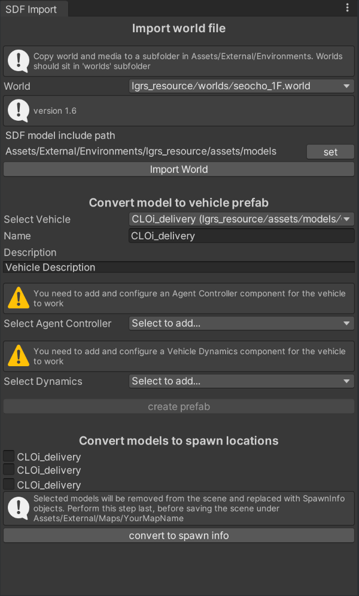

SDF Import#
Since version 2021.3 Simulator supports importing of SDF world files (v1.6) into a Unity Editor scene. From this import you can export AssetBundles for Maps and Vehicles to upload on web user interface.
Limitations#
SDF support excludes certain attributes that can't easily be implemented within Unity, such as changing the physics engine, certain physics properties that are not exposed by Unity's PhysicMaterial (e.g. max_contacts, mu2, fdir1, slip1, slip2...) or rendering material properties that do not apply to HDRP (e.g. ambient term, specular color).
SDF import only generates ArticulationBody physics components and SDF links that share joints are placed in a parent-child relationship to enable the joint even if the original links were siblings before. As such, circular joint setups are not supported.
MeshColliders are convex unless the link is static.
Plugins are only supported as stubs where Simulator will try to find corresponding c# classes to implement the plugin at runtime.
Preparation for importing a SDF world file#
Place the sdf file and associated assets under Simulator/Assets/External/Maps/YourMapName. Return to Unity and wait for the import of textures and meshes to finish.
Open the SDF import panel by clicking Simulator > Import SDF in the Unity Editor menu.

Your world file(s) should now be listed in the drop down selection box.
The import script tries a couple of default locations to figure out where sdf model files and their media are stored in relation to the world file. If they fail to be found, you can set it manually using the SDF model include path field. Note that media files are expected to live under the Simulator/Assets/External/Maps directory.
Select your world file and click Import World to start the import process. The import script will now walk the SDF xml tree and generate a new scene corresponding to the world definition.
Vehicle export#
The import process will show unique models that are not static as candidates for vehicle export. To generate a vehicle prefab, select the candidate from the drop down, enter a meaningful name and description and press create prefab. The new prefab will be created under Simulator/Assets/External/Vehicles/YourVehicleName
Add Vehicle Controller and Agent Controller Components to the root GameObject by selecting them from the dropdowns and configure them using the Inspector view. You can develop custom agent controllers and dynamics implementations by inheriting from IAgentController and IVehicleDynamics and placing the scripts under Simulator/Assets/External/Vehicles/YourVehicleName.
Saving Map scenes#
Before you want to save your scene you will want to remove the models that represent your agent from the imported scene so that they can later be placed during simulation initialization. To do this, select the models that represent agents from the selection list under Convert models to spawn locations. These models will be replaced with empty SpawnInfo GameObjects which SpawnManager uses during Simulation startup to place Ego Agents into the scene.
Building asset bundles#
Finally, after you have exported agent prefabs and have saved the map without the agent models, you can generate AssetBundles from your assets as described in the building asset section.
Plugins#
To implement a sdf plugin, you should develop a Controllable that inherits from SDFParserBase and place the SDFPluginParser attribute on its class definition to denote the plugin name this parser implements.
Example implementation:
using System;
using System.Xml.Linq;
using System.Linq;
using UnityEngine;
using Simulator.Controllable;
[SDFPluginParser("ElevatorSystem")]
public class SDFElevatorParser : SDFParserBase
{
public SDFElevatorParser()
{
}
/*
<!-- plugin parameters example -->
<plugin name="ElevatorSystem" filename="libElevatorSystem.so">
<system_name>ElevatorSystem_00</system_name>
<elevator prefix_name="Elevator_" speed="2">
<floor>floor_collision</floor>
<doors speed="0.6" closing_timer="10.0">
<inside open_offset="0.567">
<door name="left">seocho_EV_door_L_link</door>
<door name="right">seocho_EV_door_R_link</door>
</inside>
<!-- ... -->
</doors>
</elevator>
</plugin>
*/
public override GameObject Parse(XElement pluginElement, GameObject parentModel)
{
var elevatorSystem = parentModel.AddComponent<ElevatorSystem>();
elevatorSystem.elevatorSystemName = pluginElement.Element("system_name").Value;
var elevator = pluginElement.Element("elevator");
var elevatorPrefixName = elevator.Attribute("prefix_name").Value;
var elevatorSpeed = ParseSingle(elevator.Attribute("speed"), 2.0f);
var elevatorFloor = elevator.Element("floor").Value;
var doors = elevator.Element("doors");
var inside = doors.Element("inside");
var elevatorInsideDoorNameLeft = inside.Elements("door")
.Where(d => d.Attribute("name").Value == "left").First().Value;
// ...
// work with collected parameters to generate GameObjects
// instantiate Custom Behaviours etc.
// find gameobjects by name at runtime
return elevatorSystem.gameObject;
}
Place your controllable under Simulator/Assets/External/Controllables/YourControllableName and follow the development instructions as laid out in the controllable plugins chapter.